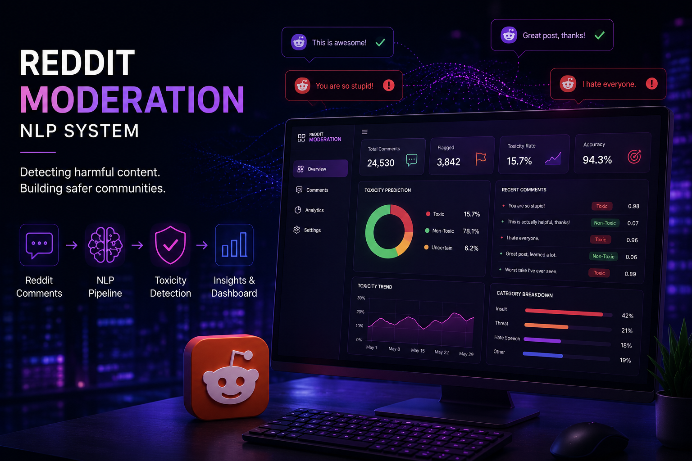
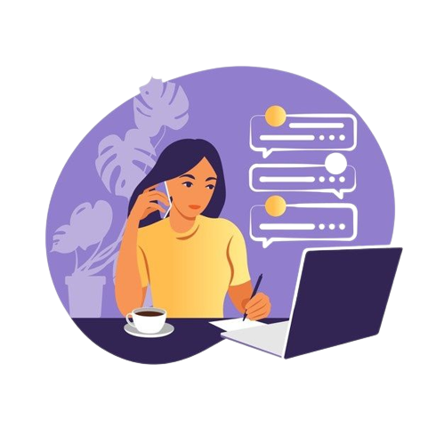
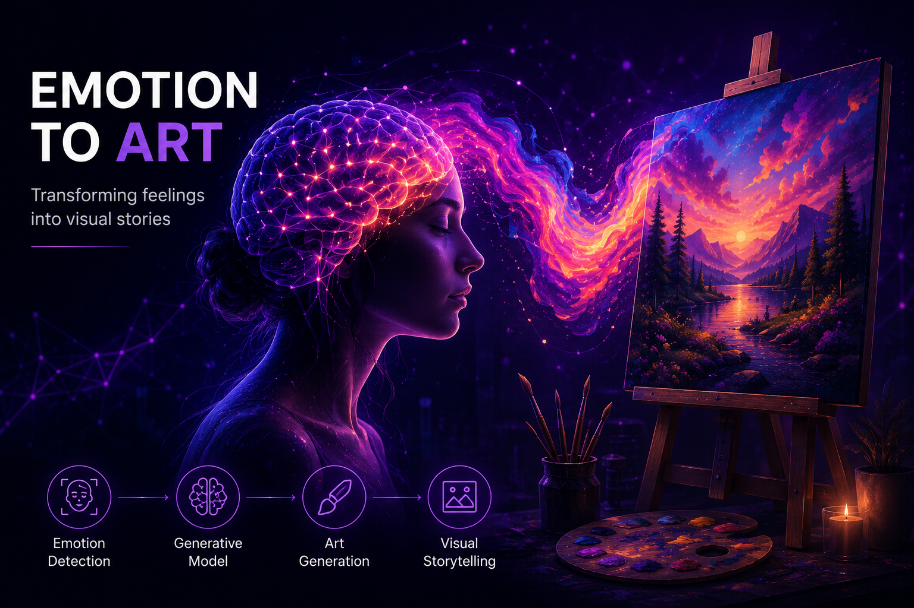
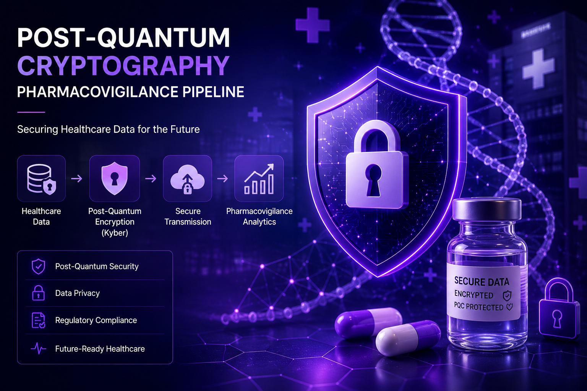
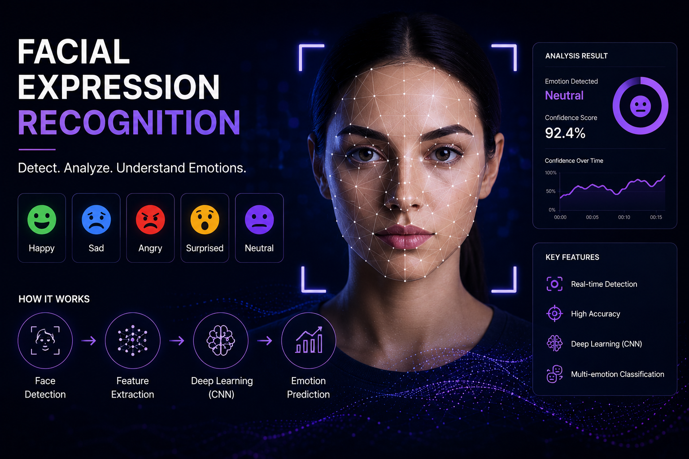

Real-Time Reddit Moderation & Emotion Analysis
Built a real-time NLP pipeline using fine-tuned DistilBERT models for hate speech detection and emotion classification across Reddit posts and nested comments.
I’m a Data Science graduate from the University of Maryland who likes learning by building. Most of my projects start with curiosity, a lot of experimentation, and figuring things out along the way : from NLP systems and generative AI workflows to secure data pipelines and multimodal AI projects.
I learn best by building — usually starting with curiosity, then slowly turning confusion into something real, tested, and useful.

I recently completed my M.S. in Data Science at the University of Maryland, College Park. I enjoy working on projects that sit somewhere between machine learning, NLP, generative AI, and real-world systems.
Most of the things I’ve learned came from building projects, getting stuck, reading documentation, experimenting, and slowly improving things over time. I’ve worked with transformers, diffusion models, LoRA, CLIP, Flask APIs, and post-quantum cryptography pipelines across different research and personal projects. I like projects where the technical side and the human side both matter — understanding model behavior, improving reliability, making systems usable, and turning vague ideas into something real.
Outside of code, I’m probably listening to music, writing, overthinking a project idea, or searching for strong coffee.
A practical mix of model development, evaluation, API-based systems, and AI workflow design.
Projects that show my current direction: applied AI systems, NLP, generative AI, and secure data workflows.

Built a real-time NLP pipeline using fine-tuned DistilBERT models for hate speech detection and emotion classification across Reddit posts and nested comments.

Designed a multimodal system that converts emotional text into generated artwork using transformer-based emotion embeddings, LoRA, Stable Diffusion, and CLIP evaluation.


Built CNN and transfer learning models using MobileNetV2, ResNet, and VGG to classify facial expressions on a 39,000+ image dataset with class imbalance analysis.
Research work connecting secure communication, quantum-safe systems, and applied security pipelines.
Published with Springer in ICT Analysis and Applications. The work explored quantum key distribution protocols, AES-based secure communication, and threats such as man-in-the-middle and brute-force attacks in secure data exchange systems.
I’m currently exploring full-time opportunities in AI/ML, NLP, GenAI, and applied AI systems. If you’re working on something interesting at the intersection of models, systems, and real-world impact, I’d love to connect.